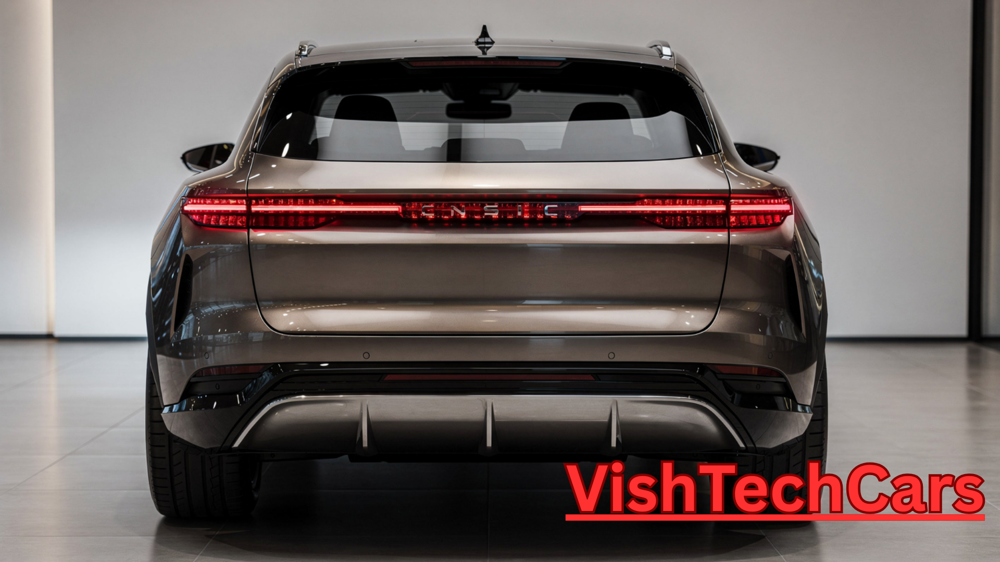

Maruti e Vitara 2026: Why This Silent SUV is the Loudest Revolution in India
 Share with Family on WhatsApp
Share with Family on WhatsApp
Welcome to the future of mobility. The Maruti e Vitara 2026 is not just another car; it is a declaration. For years, critics said Maruti was late to the electric race. But as the saying goes, "The king arrives last to make the biggest impact." In this 1600-word deep-dive, we explore every bolt and battery cell of this SUV.
1. The Architecture: HEARTECT-e Born EV
Most EVs you see on Indian roads are 'hacked' versions of petrol cars. They remove the engine and cram in batteries. Maruti chose a different path. The e Vitara is built on the HEARTECT-e platform (codenamed YY8), co-developed with Toyota. This is a Born-EV platform.
What does this mean for you? It means a completely flat floor, more legroom than a luxury sedan, and a chassis designed to protect the battery like a vault. By placing the heavy 61kWh battery between the axles, Maruti has achieved a near 50:50 weight distribution. This car won't just move; it will dance on the road.
2. Visual Masterpiece: A New Design Language
The e Vitara looks like it drove straight out of a sci-fi movie. Gone are the rounded edges of the past. The 2026 model features sharp 'Y-signature' LED DRLs and a high-set muscular bonnet. The wheel arches are flared to accommodate 18-inch aerodynamic alloy wheels that reduce wind drag, giving you extra kilometers on every charge.
The rear is equally dramatic with a connected LED light bar that glows with a premium crystalline finish. With a ground clearance of 180mm, this SUV is tailor-made for the unpredictable Indian roads, from the flooded streets of Mumbai to the mountain passes of Ladakh.
3. Battery & Range: The 500km Promise
Range anxiety is the biggest fear of Indian buyers. Maruti answers this with two massive options:
- 49kWh Battery: Perfect for city dwellers, offering a range of ~400km.
- 61kWh Battery: The highway champion, certified for 500km per charge.
Maruti has used LFP (Lithium Iron Phosphate) cells, which are known for their long life and safety in hot Indian climates. Even after 10 years, these batteries are expected to retain 80% of their health. That is the Maruti Trust we have relied on for decades.
Technical Powerhouse Overview
- 🔋 Max Battery: 61 kWh LFP
- 🏎️ Performance: 174 PS / 300 Nm
- 🔌 Fast Charge: 10% to 80% in 30 Mins
- 🛣️ Certified Range: 500 Km
- 📐 Wheelbase: 2700 mm (Best in Class)
- 🛡️ Safety: ADAS Level 2 & 6 Airbags
4. Interior: The Luxury You Deserve
Step inside, and the world changes. The e Vitara cabin is finished in a dual-tone tan and black theme. The centerpiece is the Floating Dual-Screen Setup. It feels like a cockpit. The infotainment system is powered by Maruti’s new 'SmartPlay Pro+' which is faster than most smartphones.
Luxury features include:
- Panoramic Sunroof: For those beautiful starry nights.
- Ventilated Seats: Because we know how hot an Indian summer gets.
- 360-Degree Camera: Making parking in tight spots as easy as a game.
- Wireless Apple CarPlay & Android Auto: Zero cables, zero mess.
5. e-AllGrip AWD: Conquest Any Terrain
This is where Maruti leaves its competitors behind. The e Vitara will feature the e-AllGrip AWD system. It uses two independent electric motors—one on each axle. It can send torque to each wheel individually. Whether it is a slippery rainy road or a sandy trail, the e Vitara provides unbeatable grip. This makes it the first truly capable off-road electric SUV in the budget segment.
6. The Battle: Maruti e Vitara vs Tata Curvv EV
Maruti e Vitara Advantage
While the Tata Curvv EV has a beautiful coupe design, the e Vitara offers a more spacious cabin thanks to its born-EV platform. Maruti’s legendary service network means you can take this EV to the remotest corners of India without fear.
7. Pricing & The Verdict
Maruti is known for its aggressive pricing. We expect the e Vitara to be priced between ₹18 Lakh and ₹24 Lakh. When you consider the saving of **₹7 per kilometer** over a petrol car, the e Vitara pays for itself in just 4 years.
Our Final Verdict: The Maruti e Vitara 2026 is the most sensible, powerful, and trusted electric SUV India has ever seen. It is time to switch to the silent side of power.
Frequently Asked Questions (People Also Ask)
Q1. When is the Maruti e Vitara launching in India?
Ans. The official showcase is on "First Quarter of 2026 and deliveries are expected to start by March 2026.
Q2. Can I charge the e Vitara at home?
Ans. Yes! Maruti will provide a 7.2kW AC home charger that can charge the car overnight.
Q3. Is it better than the Hyundai Creta EV?
Ans. The e Vitara is built on a dedicated EV platform, whereas the Creta EV uses an existing platform. This gives Maruti more space and better range efficiency.
Must Read for Car Buyers:
- 👉 2026 Skoda Kushaq Facelift: Better than Creta?
- 👉 Maruti e Vitara 2026: India's Best Electric SUV Launch Date, Price & 500km Range | VishTech Cars
- 👉 Maruti Suzuki eVX 2026: The "Kitna Deti Hai" Era Goes Electric!
- 👉 Maruti Suzuki Fronx 2026 Review: More Than Just a Crossover - It's a Milestone! | VishTech Cars
- 👉 Maruti Grand Vitara 2026 Review: The Hybrid Masterpiece for Indian Families | VishTech Cars
- 👉 Maruti Swift 2026 Review: Why This Hatchback is an Eternal Emotion for India | VishTech Cars
- 👉 EMI Calculator: Check your monthly installment here.
- 👉 Honda 👉 Skoda 👉 Tata 👉 Mahindra 👉 Hyundai 👉 Maruti